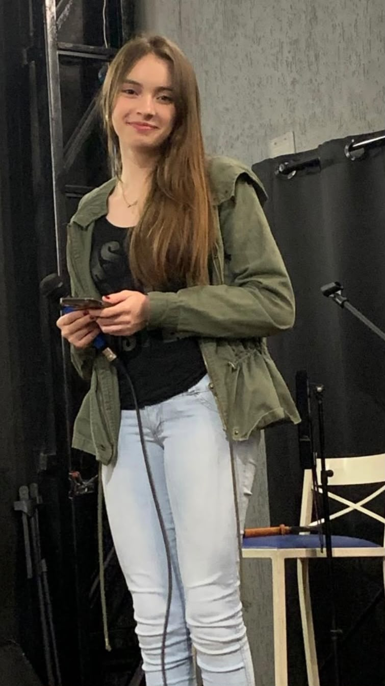
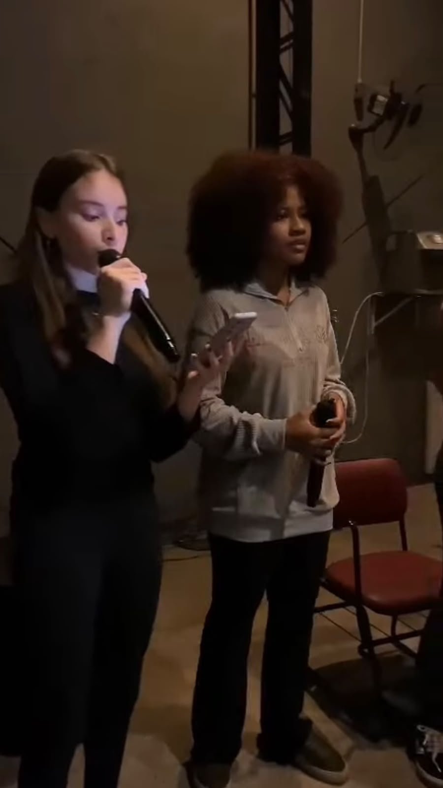
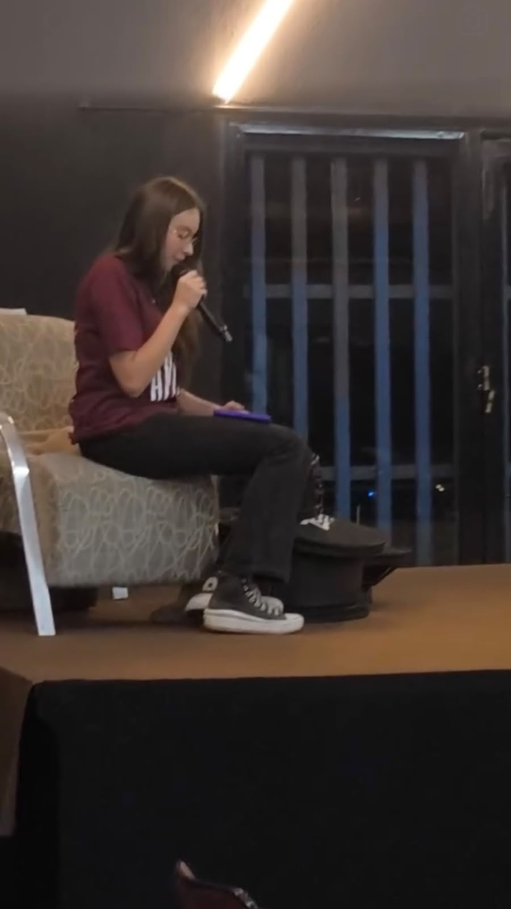

Olá! Eu sou a Pietra e estarei falando sobre um hobby interessante que tenho: Cantar!
Desde quando eu era pequena, eu vivia cantando para lá e para cá e o meu maior sonho era ser uma cantora. Eu sempre senti que eu tinha algum tipo de conexão com a arte e a música, então, esse amor por cantar aumenta a cada dia que se passa.
Quando criança, eu até tinha um microfone que não era profissional, mas me ajudava a me entreter e passava o dia inteiro cantando.
Agora sendo adolescente, minha voz evoluiu MUITO. Já cheguei a fazer uma aula de canto, mas tudo deu errado e o professor não deu mais aulas para nós. Além de tudo isso, faço parte do ministério de louvor da minha igreja e é uma experiência totalmente incrível, porque consigo me conectar com Deus através de algo que sou apaixonada.
Curiosidade: Meu timbre é soprano, que é a voz feminina mais aguda e com maior alcance vocal :)
Algumas fotos onde estou cantando/ensaiando:


